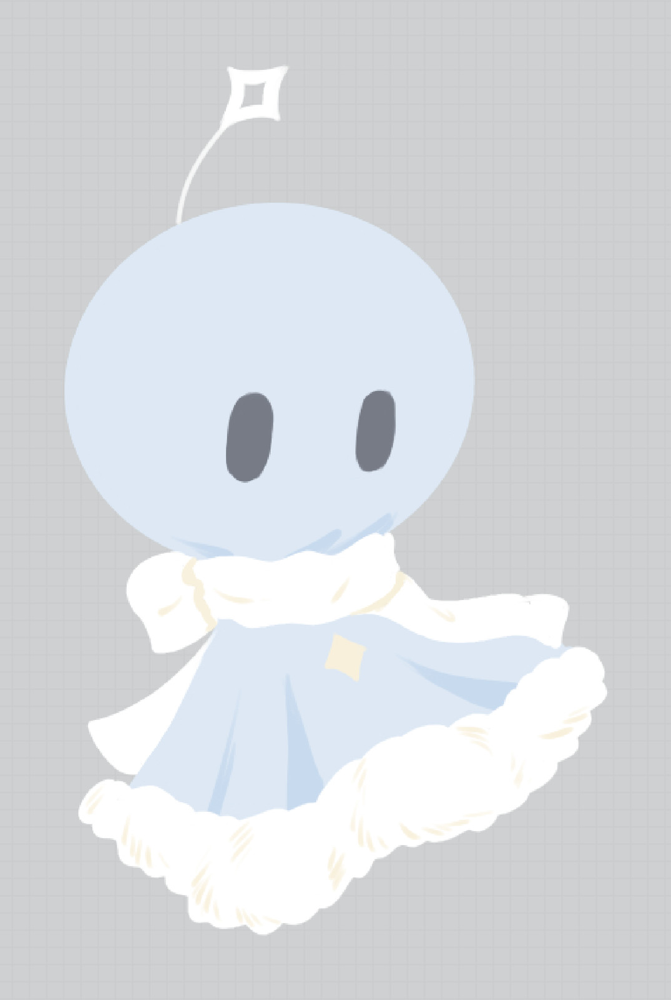

Mission
用全材质的匠心工艺，为都市人提供具象化的情绪陪伴。
打破潮玩低幼化的刻板印象，让艺术治愈力融入日常生活场景。
Story
日和是晴好的天气，也是内心的平静。印记是痕迹，也是留在生活里的情绪。
日和
Hiyori · ひより
源自日语「日和」（ひより），代表 Clear Days 与 Gentle Harmony。它不仅指天气，更指一种内心的晴朗与平静——无风无雨、阳光刚好的理想生活状态。
印记
Imprint
兼具「印刷 / 印记」与「心理烙印」的双重含义。品牌出品的每一件小物——香氛、纸品、挂饰——都希望在日常中为你留下温暖的情绪印记。
中文品牌名为「日和造物」，英文名为 HIYORI IMPRINT。「日和印记」是英文名的诗意读法，用于店招与叙事。
Logo Concept
它是一个「晴云守卫」，以极简、治愈的形态，守护每一日和。
01
晴天娃娃的现代抽象化表达。两条竖线（眼睛）代表着静默的注视与陪伴。
02
将传统娃娃的下摆，转化为云朵或波浪的形态，寓意「拨云见日，晴空万里」。
03
胸前的倒三角与两旁的四芒星，提取自「守护符」的意象，代表日常里微小但闪光的瞬间。

Beginning
日和印记，开始于一个很私人的愿望。
那时，我只是想给一个喜欢的角色做一只晴天娃娃。把它挂在身边，抬头就能看见一小片晴空；好像只要它在，普通的日子也会多一点安心。那是一种很小、很轻的幸福，却真实地留在日常里。
后来我发现，被这只晴天娃娃安慰到的，不只是我。
它挂在窗前、包上、桌边，像一个安静的晴云守卫。晴天时，它提醒我记住阳光；阴天时，它提醒我天晴还会回来。于是我想：如果这样一只小小的晴天娃娃，能为更多人带来一小片晴空，是不是也很好？
日和造物就这样诞生了。
我们从「日和」出发——晴好的天气，平和的日子；以「印记」为名——让每一个微小而确定的幸福，都有迹可循。我们用香氛、纸品与挂饰，把晴好日常做成可触摸的小物：一枚挂饰、一张卡片、一缕香气，都是一次对晴天的记录，也是一枚留在生活里的情绪印记。
我们不制造喧哗的快乐，只愿在忙碌的生活里，为你留下一点晴、一点温和、一点被记住的微小幸福。

Character
IP 形象延续标志中的晴云守卫：圆润头部、两条竖线眼睛、胸前四芒星，下摆作云朵般的毛绒花边。
颜色只有晴空雾蓝与暖雪白。它不发出声音，只是静静地在那里——提醒你阳光还在，或即将回来。
Mission & Vision
Mission
打破潮玩低幼化的刻板印象，让艺术治愈力融入日常生活场景。
Vision
未来，当人们感到疲惫或焦虑时，除了去喝一杯咖啡，也会想到带走一只日和造物的晴天娃娃——让一小片晴空，重新回到身边。
日和造物服务的是这样一群人：他们正在被生活轻轻压着，却仍然愿意为一点晴好买单；他们不需要被教育要快乐，只需要一件小物，替他们记住——忙碌里，也有天晴。